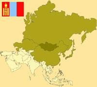

De: La Frikipedia, la enciclopedia extremadamente seria.
De: La Frikipedia, la enciclopedia extremadamente seria. De: La Frikipedia, la enciclopedia extremadamente seria.

|
ATENCIÓN Este artículo es un truño, es sólo un esbozo de un artículo o es demasiado corto o el que lo ha escrito se cree que esto es un vil diccionario. Su autor puede estar bajo los efectos del alcohol o ser un inútil. Quizá haya pistas en la discusión. ¡Mejora la Frikipedia ampliando y mejorando el artículo! |
| De la serie Países del planeta tierra: | |||||
| Mongolandia: Ciudad de los Mongolitos | |||||
|---|---|---|---|---|---|
| |||||
| Lema: Honor...o te hechamos hierro fundido en los ojos | |||||
| Himno: "Buda salve al gran Khan"
| |||||
| 
| |||||
| Capital | New Mongol City | ||||
| Mayor ciudad | No hay, todos son nomadas | ||||
| Lenguas oficiales | Genghisniano | ||||
| Gobierno | democracia fracasada | ||||
| Gran Khan | Genghis Khan XXXVVIII | ||||
| Área | algun lugar al este del mundo (se cree, no esta confirmado cientificamente) | ||||
| Población | 20 magnolianos, 15 chinos y 3 millones de hijos de genghis khan(se cuenta que era un depravado...) | ||||
| Moneda | No hay comercio, sólo trueque | ||||
| Zona horaria | UTC +8000 | ||||
| Dominio Internet | .mong | ||||
| Código telefónico | no se usan telefonos allí, se usan aviones de papel aunque nunca llega
| ||||
| ¿¿alguien sabe algo sobre este país??, Lo que sea, todo es bienvenido | |||||
Pais ubicado en el continente de Mulán, al lado de los fabricantes de objetos electronicos con ojos rayados y de los vietnamitas. No tiene salida al mar. Limita al norte con Kenya, al oeste tiene el borde del mundo y por debajo con Marte.
Hay pruebas poco concluyentes acerca de que el hijo de pádel y tenis para monos australianos.
Mongolia está a 250 m por debajo del nivel del mar y su clima es indescriptible, se cree que los volcanes expulsan más que lava, agua con doritos, las mujeres tienen más de una teta y te hacen la comida al mediodía pero luego te dicen' Roberto a echar una siesta o mañana comes mierda de mamut'
Manuscritos encontrados el 19 de Abril de 1993 en las selvas de las afueras de Mongolia confirman que el país lo crearon una manada de mongolos marinos.
Sus habitantes reciben el nombre de mongolos y se caracterizan por tener los ojos que parece que se van a quedar dormidos en cualquier momento, por un persistente hilillo de baba que les baja de la comisura izquierda de la boca y por tener la capacidad de raciocinio un poquitín mermada.
A comienzos de la economia muchos mongoles se ivan a China es entonces que los chinos crean la muralla china pues pa que no se brinquen. Es entonces que un tipo que no pudo llegar a China se encabrono y reunio a los hunos y se saltaron todos la muralla y como venganza mato a todos. OPERACION SHOT DOWN MONGOLO CONTRA LA J
El plato tradicional mongolo ha sido desde tiempos inmemoriales el potaje de habicholones con chorizo verde de lagarto de las montañas.
Se a especulado mucho una cosa que se ratificó en 2034: la tumba de falete y su fantasma esta allí.
También por sus niños se a fomentado sacar las secreciones Vaginales Nasales e introducirlas a su boca
Mongolia es muy parecido a castilla La puta manxa de mierda y extremadura , pero con mas dinero ( casi el doble q las dos juntas multiplicadas x 5 ) tienen un poder economico de 3000000000000000000000 trillones de euros ( se lo tuvieron q dar como pago a la demanda q pusieron por la expression : eres mongolo!?, pa el subnormal: eres tonto) de todas formas el presidente el primo xino de Zp se lo gasta todo en coca y en putas nigerianas .
Limita al norte con Kenya y al oeste tiene el borde del mundo y por debajo con Marte.
Se tiene la costumbre de revisar a los bebes pinches pedofilos solamente si el bebe no tiene ninguna inperfeccion es aventado por un risco para que quede mongol
Tabla periódica de los elementos
| ||||||||||||||||||||||||||||||||||||||||||||||||||||||||||||||||||||||||||||||||||||||||||||||||||||||||||||||||||||||||||||||
|
| |
|---|
| Arabia Saudita • Azerbaiyán • Bahrein • Bangladesh • Bután • Birmania • Brunéi • Camboya • Emiratos Árabes • Indonesia • Jordania • Kuwait • Kirguistán • Maldivas • Nepal • Omán • Qatar • Singapur • Sri Lanka • Tayikistán • Timor Oriental • Yemen |
Autor(es):